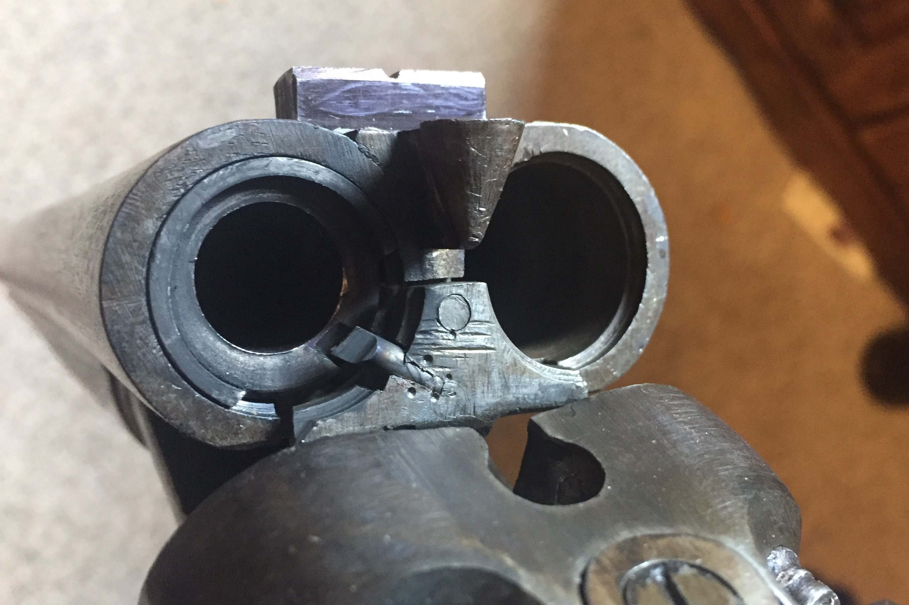

Combination Gun
Summer 2018
Converting a damascus-barrel shotgun to a 12ga/.45-70 combination gun.
A combination gun is a gun that has more than one barrel (generally just two), with at least one being a shotgun barrel and at least one being a rifle barrel such that the one gun can hunt many kinds of game. They are generally quite expensive, traditionally being more status symbols of a sophisticated gentleman sportsman than practical weapons. I came across a Belgian double-barrel shotgun, likely from the late 1800s. It was total junk of absolutely terrible quality. I later found that the barrels were actually soldered completely twisted. However, it looked a bit interesting with it's damascus barrels. I decided to sleeve one barrel down to .45-70 to create a combination gun. The process was actually very easy so there's not much to talk about. A simple barrel was made with whatever high-strength steel I had on hand, which was much shorter than the actual shotgun barrels, but that's no problem. It was rifled and chambered in the usual manner. On the outside of the barrel I machined features matching a 12ga. shell, such that the sleeve could be inserted into the shotgun barrel just like a shotgun shell would.
The internal barrel next to the gun.
The sleeve later had a brass bushing added to the end which was a snug fit in the shotgun bore. Then came a series of unremarkable but annoying eccentric machining steps to get the sleeve aligned reasonably to the bowed shotgun barrels. This is the reason the bore seems off-center. Then the extractor was drilled and a dowel pin added and ground to a shape that would allow it to extract the .45-70 cases. Simple express-style sights were added like a double-rifle may have, and that was that. A quick two-day project.

The new breech, with added extractor.